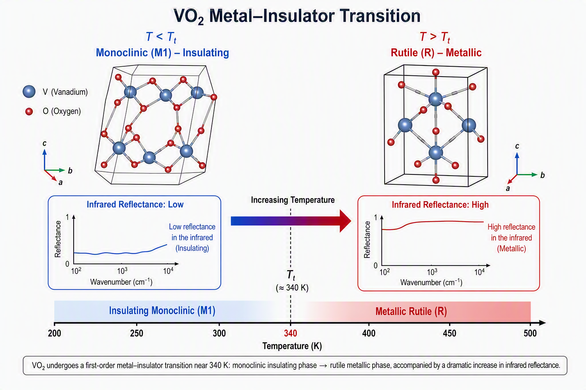
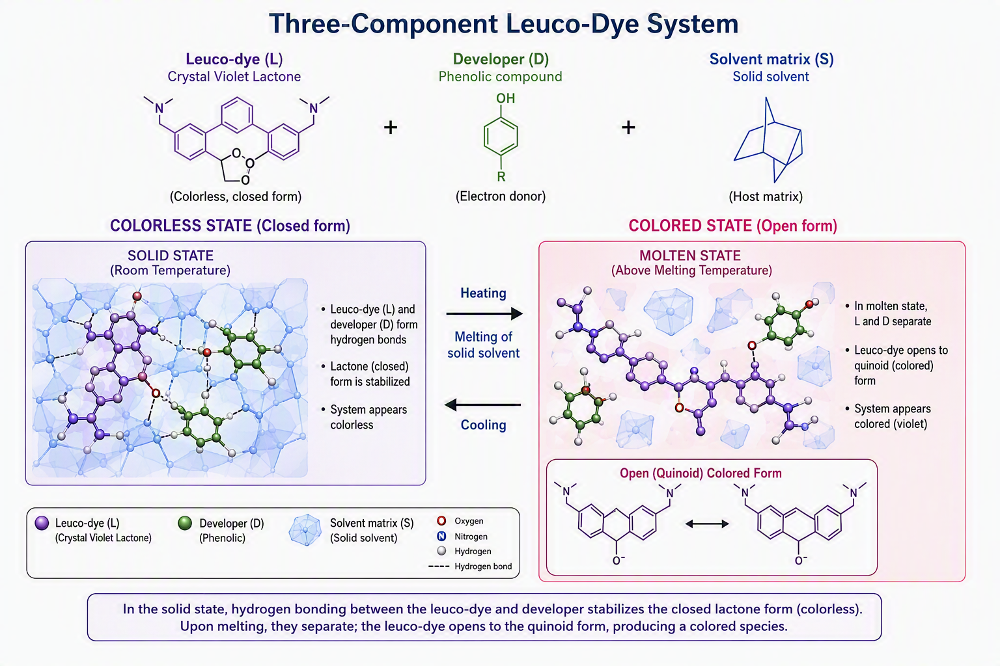
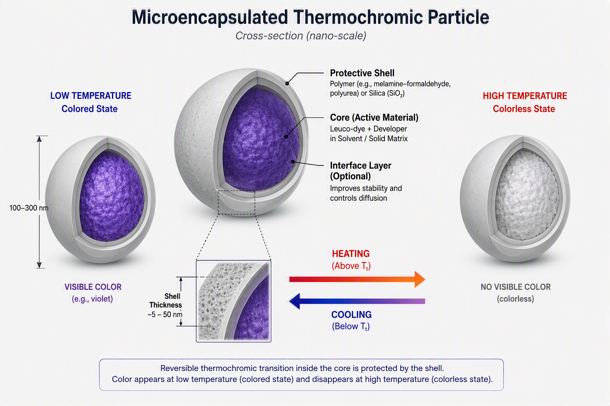
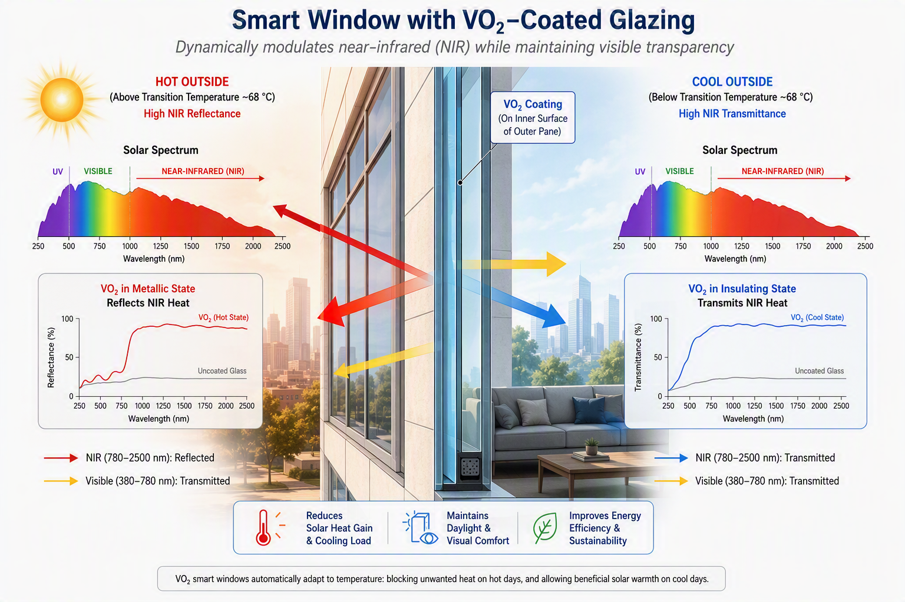
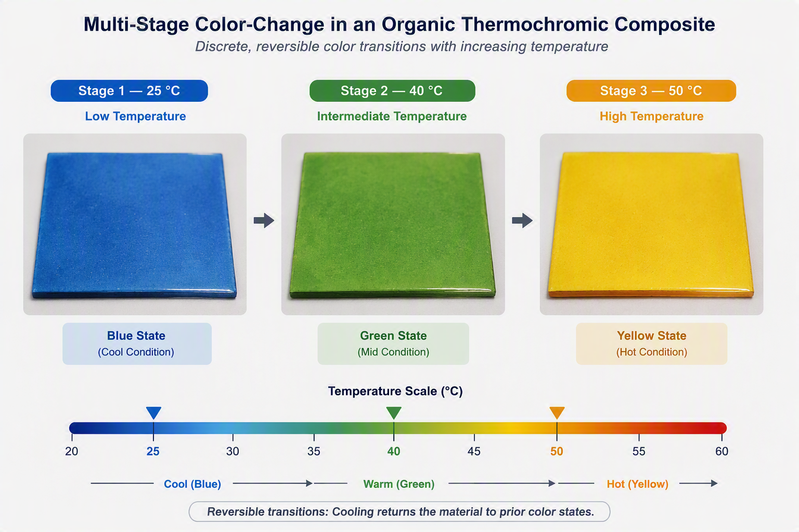

Thermochromic Materials: How Temperature Make changes in Colors
Thermochromic materials change their optical properties — most often color, but also infrared transmittance or reflectance — in response to temperature. This response is reversible in many systems and irreversible in others. The underlying drivers range from molecular rearrangements and phase transitions to electronic structure shifts. Understanding these mechanisms gives materials scientists precise control over switching temperature, contrast, durability, and spectral selectivity.
From This article we are going to learn about thermochromic materials, the physical and chemical processes that produce the color or optical change, how researchers improve performance through microencapsulation and compositional tuning, and the practical applications that emerge from that control. Welcome to the MATERAILS Insider!!!
Introduction: What is Thermochromic:
A thermochromic material undergoes a detectable change in its interaction with light when its temperature crosses a characteristic threshold or range. In the visible spectrum this appears as a color shift. In the near-infrared it appears as a change in transmittance or reflectance. The transition can be continuous or abrupt, reversible or permanent, depending on the material system.
There are Four main materials families:
- Inorganic systems (metal oxides, complexes, and related compounds)
- Organic systems (primarily leuco-dye composites)
- Polymeric and liquid-crystalline systems
- Hybrid organic–inorganic or nanostructured systems
Each family operates through a distinct set of mechanisms, so the design rules differ.

Inorganic Thermochromic Materials: Phase Transitions and Electronic Structure
Vanadium dioxide (VO₂) is the most intensively studied inorganic thermochromic material for energy applications. Near 68 °C it undergoes a reversible metal–insulator transition (MIT). Below the transition temperature the material is monoclinic and semiconducting; above it the structure becomes rutile and metallic. The change produces a sharp increase in infrared reflectance while visible transmittance remains relatively high. This combination makes VO₂ attractive for passive solar regulation in windows.
The transition temperature can be lowered toward ambient conditions by elemental doping (commonly tungsten) or by microstructural engineering. Co-doping strategies and multilayer optical designs further improve luminous transmittance and solar modulation ability simultaneously. Core–shell particles, sandwich structures (for example Cr₂O₃/VO₂/SiO₂), and nanofiber composites have been shown to enhance environmental stability and optical performance.
Other inorganic systems rely on changes in ligand-field splitting, charge-transfer bands, or dehydration/rehydration of coordination complexes. In some transition-metal compounds a solid-state polyhedral rearrangement or loss of water molecules alters the electronic absorption spectrum, producing a visible color change. High-pressure synthesis routes have also been used to trap metastable phases that exhibit irreversible thermochromism at elevated temperatures, useful for permanent temperature-history markers.
Inorganic materials generally offer good thermal stability and resistance to photodegradation, but many operate at temperatures higher than ambient or require careful control of stoichiometry and crystallinity.

Organic Thermochromic Materials: The Three-Component Leuco-Dye System
Organic thermochromic systems, especially those based on leuco dyes, dominate applications that require vivid color changes near room temperature. The classic reversible system contains three components:
1. A color former (leuco dye) such as crystal violet lactone (CVL) or a fluoran derivative. In its closed lactone form the molecule is colorless.
2. A color developer (weak acid or phenolic compound) that can protonate or form hydrogen bonds with the dye.
3. A phase-change solvent (long-chain alcohol, ester, or fatty acid) whose melting point sets the switching temperature.
Below the melting point of the solvent the system is solid. The developer and dye interact strongly, opening the lactone ring and generating a conjugated, colored species. Above the melting point the solvent liquefies, the components separate or the equilibrium shifts, the lactone ring closes, and the color disappears. The process is reversible upon cooling.
The color contrast, hysteresis width, and switching sharpness depend on the relative concentrations of the three components and on the length of the alkyl chains in the solvent and developer. Spectroscopic studies (infrared and UV–visible) show that the intensity of the open-ring carbonyl vibration correlates directly with the observed color difference. Cumulative color difference in CIELAB space provides a quantitative metric for optimizing formulations.
Recent work has replaced traditional developers such as bisphenol A with safer alternatives (macrocyclic compounds, certain liquid-crystalline acids, or catechol/pyrogallol derivatives) while preserving high contrast. Multi-stage color changes have been achieved by combining two leuco dyes or two distinct mechanisms within a single composite, producing sequential transitions (for example blue → green → yellow).
Organic systems excel in low-temperature response and rich color palettes but are susceptible to photodegradation and solvent leakage unless protected.

Microencapsulation and Protection Strategies
Both organic and hybrid thermochromic materials benefit from micro- or nanoencapsulation. The active core is surrounded by a polymer or inorganic shell (poly(methyl methacrylate), silica, urea-formaldehyde, etc.). Encapsulation serves several purposes:
- Isolates the core from oxygen, moisture, and ultraviolet light
- Prevents leakage of the solvent phase
- Allows incorporation into inks, coatings, fibers, and composites without loss of function
- Improves thermal cycling stability
Miniemulsion polymerization, interfacial polymerization, and layer-by-layer assembly are common fabrication routes. Encapsulation efficiencies above 70–80 % and retention of thermochromic response after dozens to hundreds of cycles have been reported. Fluorescent cross-linkers can be added to the shell to create dual thermochromic–fluorescent particles useful for high-security anticounterfeiting inks.
For building coatings, inorganic shells such as TiO₂ or ZnO also provide additional UV screening, further extending lifetime under solar exposure.

Polymeric, Liquid-Crystal, and Hybrid Systems
Certain polymers and polymer blends exhibit thermochromism through refractive-index matching or phase separation. Poly(n-alkyl acrylate) blends, for example, can switch between transparent and hazy states at temperatures determined by the alkyl side-chain length. These materials are useful for privacy glazing and adaptive roofing.
Liquid-crystalline systems produce selective reflection that shifts with temperature, giving continuous color changes across the visible spectrum. Photonic-crystal approaches rely on thermally induced changes in lattice spacing or refractive-index contrast.
Hybrid systems combine the rapid response or spectral selectivity of inorganic particles with the processability of organic matrices, or embed phase-change materials inside thermochromic shells to couple color change with latent-heat storage.
Applications Grounded in Research
Smart windows and building envelopes VO₂-based coatings modulate near-infrared transmission, reducing cooling loads in warm climates while preserving daylight. Organic thermochromic coatings on opaque surfaces alter solar reflectance with temperature, helping mitigate urban heat-island effects.
Temperature indicators and sensors Leuco-dye microcapsules in packaging, cold-chain labels, and medical devices provide irreversible or reversible visual records of temperature excursions. Sub-zero formulations have been developed for frozen-food and pharmaceutical logistics.
Textiles and wearable devices Encapsulated thermochromic pigments can be printed or spun into fibers, producing fabrics that change color with body heat or ambient temperature.
Anticounterfeiting and security Dual thermochromic–fluorescent nanocapsules generate temperature-triggered optical signatures that are difficult to replicate.
Thermal-energy storage and adaptive coatings Combining thermochromism with phase-change materials allows simultaneous visual indication and latent-heat management.

Current Challenges and Research Directions
Key limitations identified across multiple reviews include:
- Photodegradation and long-term cycling fatigue of organic systems
- Trade-offs among luminous transmittance, solar modulation, and transition temperature in VO₂ films
- Toxicity or environmental concerns associated with certain developers and heavy-metal compounds
- Scalability of high-performance multilayer and nanostructured coatings
- Response speed and hysteresis control for real-time sensing
Ongoing research focuses on non-toxic developers, core–shell and inverse-core–shell architectures, low-temperature deposition methods for VO₂, multi-mechanism continuous color systems, and integration with radiative-cooling layers.
Summary
Thermochromism is not a single phenomenon; it is a family of temperature-triggered optical responses arising from molecular, structural, or electronic rearrangements. Selecting the right system requires matching the mechanism to the required temperature range, spectral window, reversibility, and durability. Microencapsulation and compositional tuning convert laboratory curiosities into functional coatings, inks, and composites. The same principles that govern color change in a leuco-dye capsule also govern infrared switching in a VO₂ smart window—only the length scale and the electronic details differ.
Mastery of these mechanisms allows intentional design of materials that sense, indicate, and adapt to thermal environments without external power.
References
1. Hakami, A., Srinivasan, S. S., Biswas, P. K., Krishnegowda, A. T., Wallen, S. L., & Stefanakos, E. K. (2022). Review on thermochromic materials: development, characterization, and applications. Journal of Coatings Technology and Research, 19, 377–402. Link
2. Cui, Y., Ke, Y., Liu, C., Chen, Z., Wang, N., Zhang, L., Zhou, Y., Wang, S., Gao, Y., & Long, Y. (2018). Thermochromic VO₂ for Energy-Efficient Smart Windows. Joule, 2(9), 1707–1746.
3. Xu, F., Cao, X., Luo, H., & Jin, P. (2018). Recent advances in VO₂-based thermochromic composites for smart windows. Journal of Materials Chemistry C, 6, 1903–1919.
4. Panák, O., Držková, M., & Kaplanová, M. (2015). Insight into the evaluation of colour changes of leuco dye based thermochromic systems as a function of temperature. Dyes and Pigments, 120, 279–287.
5. Panák, O., et al. (2017). The relation between colour and structural changes in thermochromic systems comprising crystal violet lactone, bisphenol A, and tetradecanol. Dyes and Pigments.
6. Chen, C., Huang, K., Gui, Y., et al. (2026). A Review of Thermochromic Materials for Passive Adaptive Solar Regulation in Buildings: Mechanisms, Performance and Applications. Sustainability, 18(9), 4158.
7. Liu, K., & Wang, G. (2026). A review of recent progress in multi-component organic thermochromic materials: mechanisms, performance optimization, and applications. European Polymer Journal, 242, 114408.
8. Dinda, et al. (2025). High-Contrast Colorless-to-Colored Thermochromic Materials. Small, 21, e11454.
9. Related studies on encapsulation, sub-zero systems, multi-stage color change, and high-pressure irreversible thermochromism as cited in the text.
Tacoma Narrows Bridge Collapse (1940)
The Tacoma Narrows Bridge Collapse of 1940 remains one of the most important engineering failures in history and a classic materials science case study which was caused by aeroelastic flutter rather than simple resonance.
Read Full Article →Space Shuttle Challenger Disaster (1986)
The Space Shuttle Challenger disaster was NOT caused by a rocket engine failure or software malfunction. The root cause was the loss of sealing performance in rubber O-rings located within the Solid Rocket Booster.
Read Full Article →Share this article:
Advertisement 1/4
Advertisement 2/4
Advertisement 3/4
Advertisement 4/4